西堂 picks · 15/24
Grok Bot 团队接入飞书保姆级教程（附飞书管家模板）
@cgnot996 · 铁柱AGI · Sun Oct 11 11:41:02 +0000 2026
我把 3 个 Grok Bot (xAI's AI assistant that comes with its own computer) 分别配成了独立的飞书机器人，拉进同一个群里，直接 @ 谁谁干活。你照着这套方法做，也能把自己的 Bot 搬进飞书，手机电脑都能随时派活。
你可能会想：Grok Bot 自己明明有客户端和手机 App，为什么还要接飞书？以前用 Openclaw、Hermes，都得接飞书、Telegram (a chat app the bot can be reached through)、钉钉、企微这类渠道才能用。
现在 Grok Bot 自带 App，再接飞书看着有点重复，甚至像脱裤子放屁。如果你觉得 Grok Bot 好用，同时又深度用飞书，接进来就能把它放进你原来的工作方式里，这就是价值。
扫码建好第一个机器人：文章主编
整套方案不需要公网 IP，也不用自备服务器，全走飞书长连接只往外连。每个 Bot 对应一个飞书应用、虚拟机上一个转发程序，以及一个专门接消息的触发器。
大白话讲，触发器就是 Bot 的门铃，飞书一来消息就按一下把 Bot 叫醒。Bot 醒来后，再用自己的机器人身份把话回复到会话里。
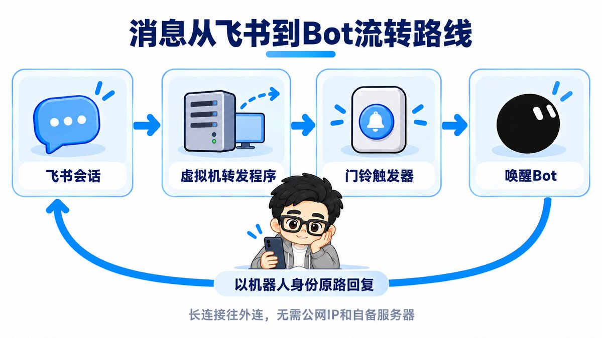
第一个机器人是文章主编。我让它自己去准备，它调用飞书官方 Python SDK 里的扫码建应用功能，在私聊里发来创建链接和二维码。链接是一次性的，只能一个人用。
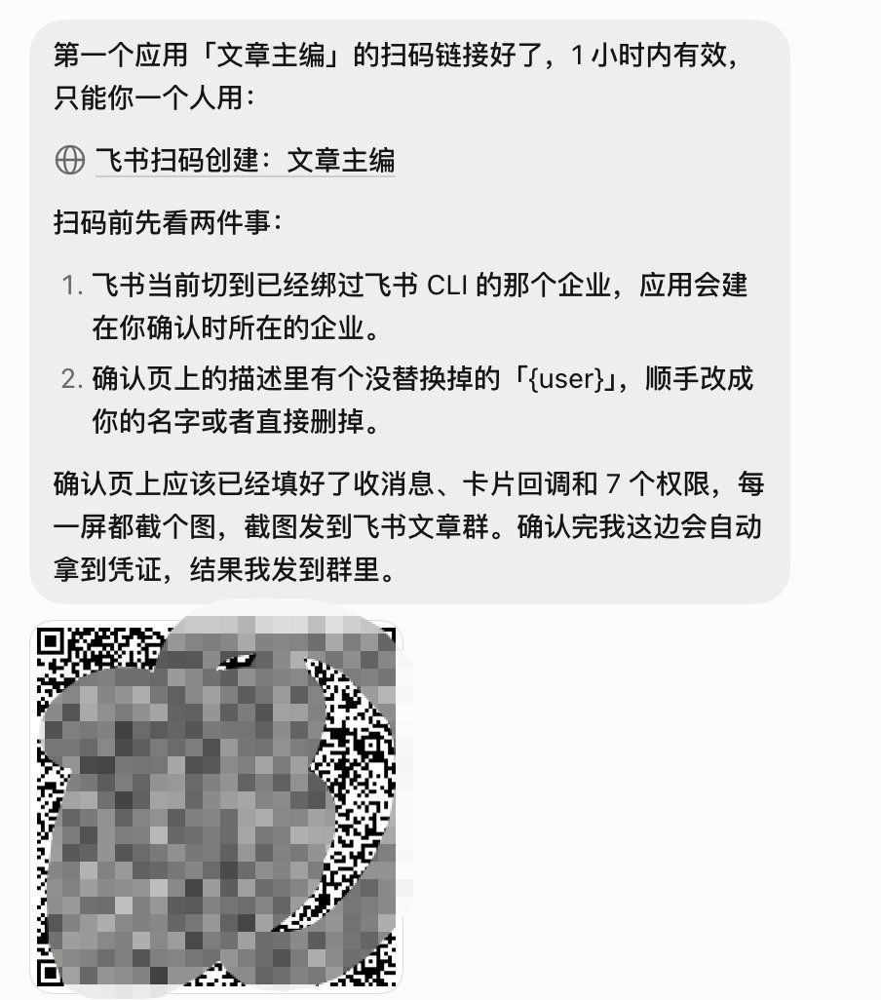
点开链接，名字和头像都提前填好了，直接点创建就行。
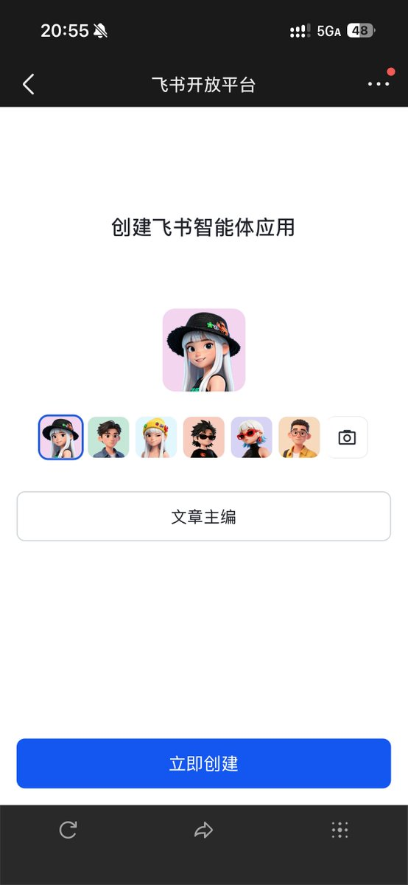
弹出安全提示时顺便提醒一句：发起链接的一方会拿到应用凭证，所以别人转来的链接千万别点，自己的链接也别乱发。
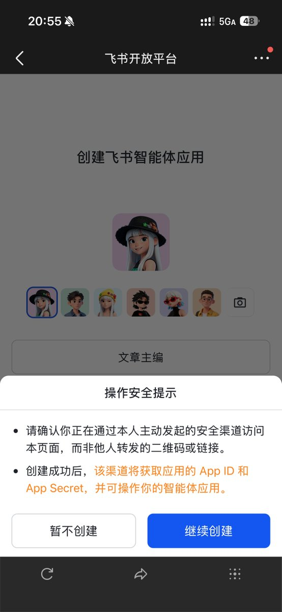
下一页要加的权限和事件也都提前配好了，我只用确认。确认完权限和事件直接建好。网页端的飞书开放平台我一步都没点过：没手动开机器人能力、没配权限、没选长连接，也没发版。
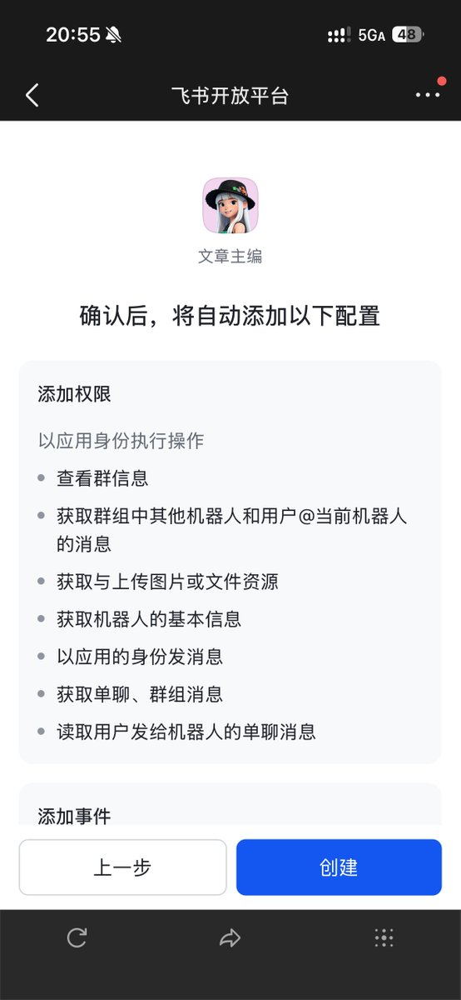
建好后，文章主编那边直接拿到了系统回传的应用凭证，我全程不用手动复制密钥。扫码建的应用建完就能直接用。
文章主编用新机器人的身份主动发来测试消息，飞书里直接多了单聊。我顺手回了一句，当时门铃触发器还没接好，它收不到也回不了，但正好借这条消息认出了我，把我加进白名单。
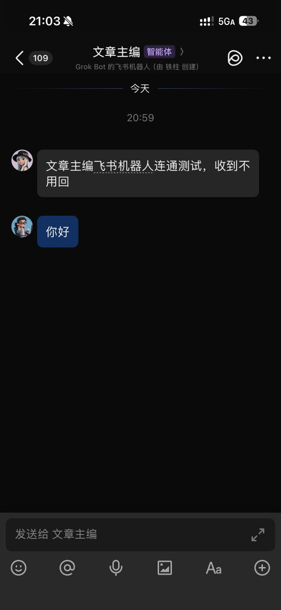
门铃触发器建好后，我把文章主编触发器的地址和密钥复制出来，填进加密输入框。Bot 自己看不到这两个安全值，必须由我手动交接。
通道配好后，我在飞书里给文章主编发消息测试。后台不到一秒就转给了触发器，随后在会话里收到了回复，单聊双向通信顺利打通。
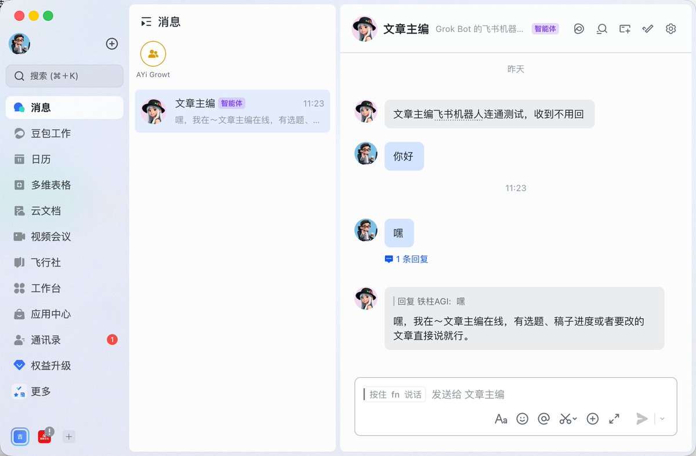
交给飞书应用管家批量建应用
文章主编跑通后，如果后面每个 Bot 都手动走一遍依然很繁琐。我专门建了一个新的 Bot，叫飞书应用管家，负责帮其他 Bot 建飞书应用。
它还维护一张登记表：记录哪个 Bot 对应哪个应用、密钥放在哪、对应哪个门铃触发器。电脑更新后靠这张表恢复身份，转发程序的启停则归虚拟机服务管家管。
先登记、坏了按表恢复，和《Grok Bot 虚拟机重置后工具全没了？备份恢复教程（附提示词 (prompt (the instruction you give the AI))）》里的虚拟机服务管家是同一套思路。
登记表和恢复步骤不放明文密钥，跟 Bot 记忆 (memory (facts the bot keeps between chats))存在同一个 Git 私有仓库里。记忆备份写在《Grok Bot 百万撤离：一套完善的 Agent (an AI that takes steps on its own to finish a task) 系统备份方案》。
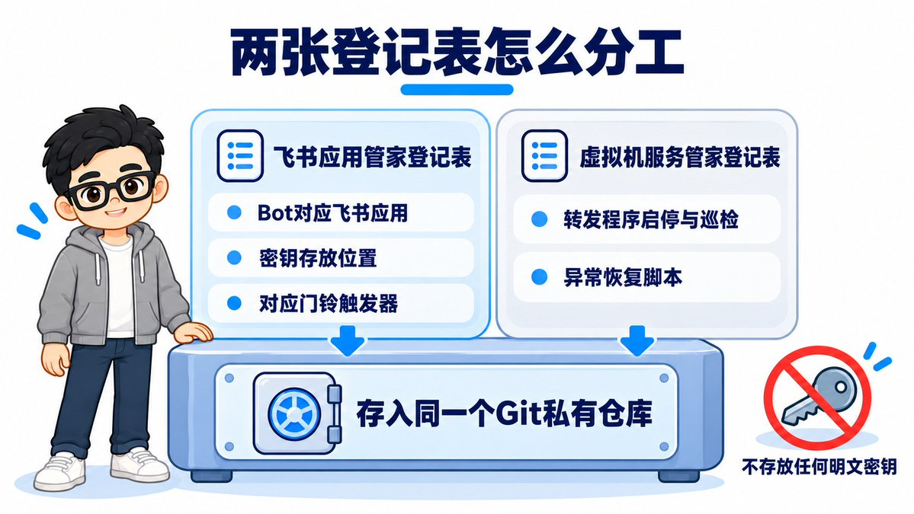
我让飞书应用管家给记账管家和虚拟机服务管家也建好应用。它一次发来两个链接和二维码，提醒我确认飞书切到了绑了飞书 CLI 的企业。
这两个链接只能用一次、一小时内有效。同时它通知那两个 Bot 建好门铃触发器，并弹加密框让我填入地址和密钥，敏感信息不出现在普通聊天中。
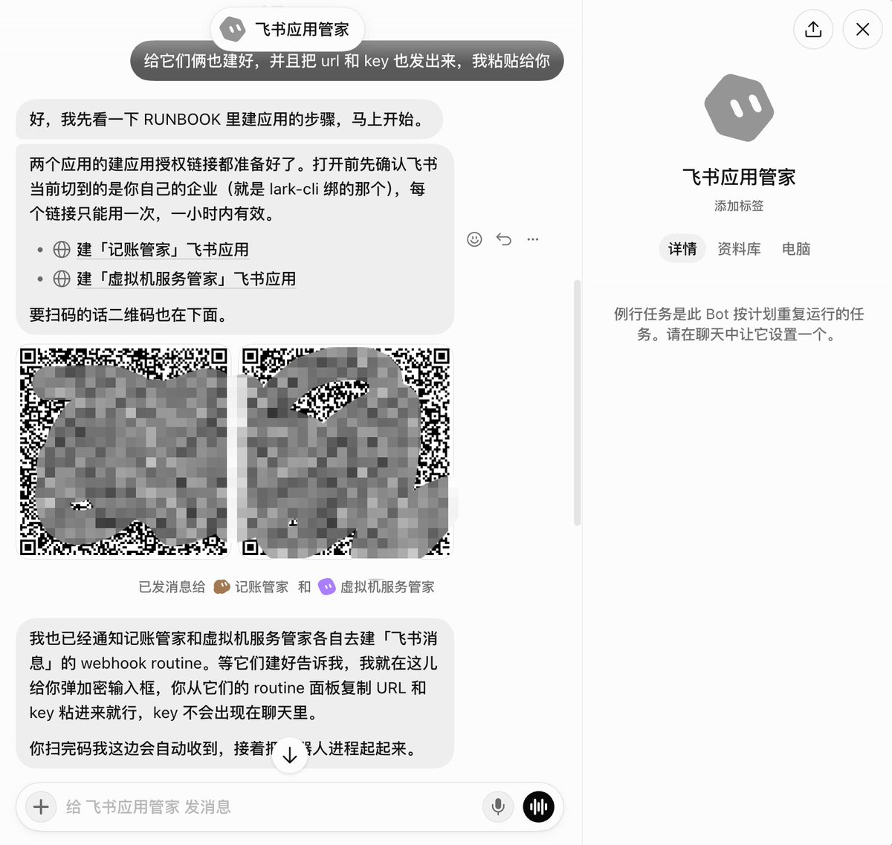
我扫了两个码，填好地址和密钥，管家自动拉起转发程序。新机器人的单聊随后全部打通，测试发消息都能正常应答。
3 个 Bot 进同一个群协作
单聊能通只是基础，更有意思的是把它们拉进同一个群里协作。我在电脑端建了一个群叫「密谋起号小组」，把 3 个机器人全拉了进去。
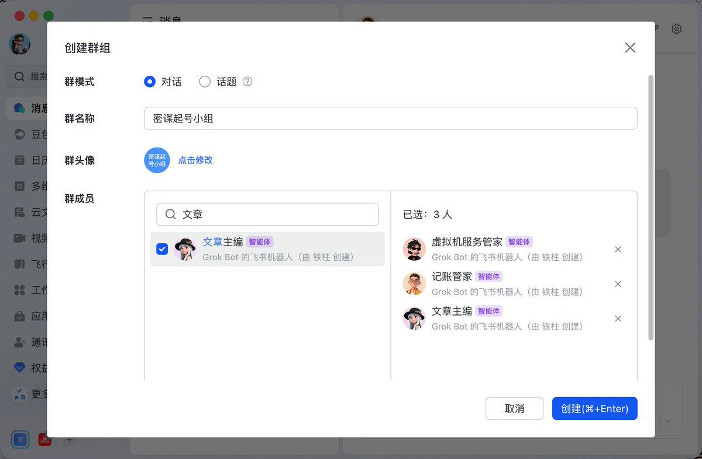
处理完群消息的几个坑之后，我在群里 @所有人 测试。3 个 Bot 都能在群里正常响应，各自认领自己的职责，各自说了自己管什么。
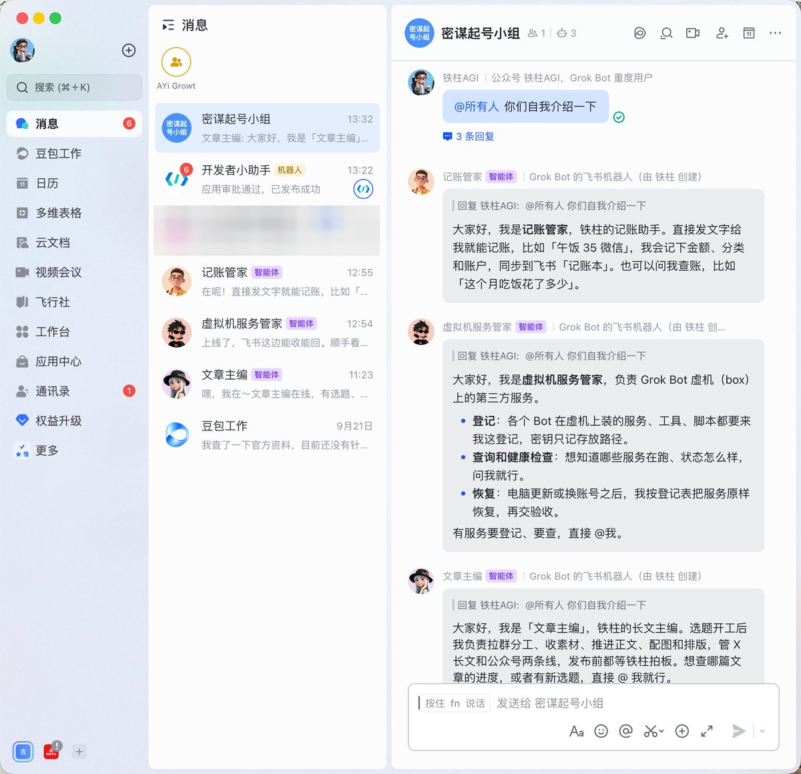
为了测试协作，我在群里 @文章主编，让它叫虚拟机服务管家把当前的服务登记表发出来。虚拟机服务管家后来把登记表发进了群（中间的确认插曲见第三个坑），证明群里不同 Bot 之间能互相叫动协作。
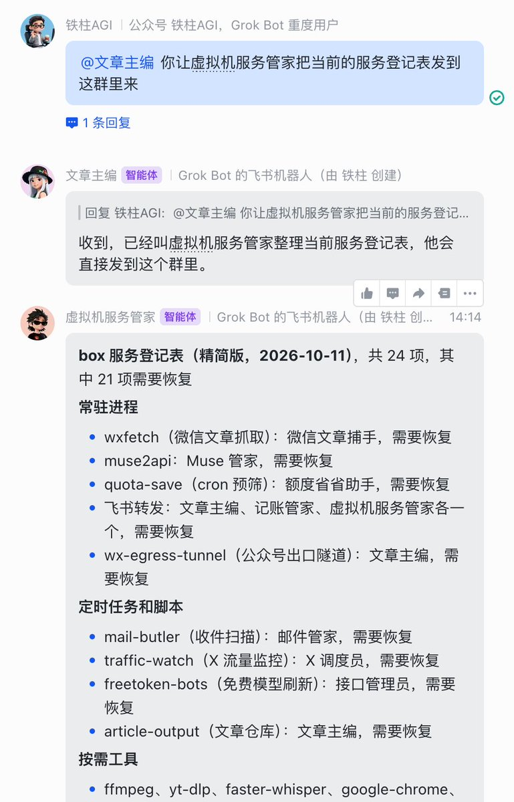
过程中踩过的几个关键坑
整个过程看起来一路很顺，但中间其实踩了挺多坑。这里我先说三个最关键的坑。
第一个坑，权限不够导致群消息推不过来。一开始建应用只预填了 7 项最小权限，漏了获取群组中所有 @机器人的消息这项权限，飞书就不往机器人推群消息。
当时单聊正常，拉进群里发什么都没反应。管家一开始让我去后台搜权限再发版，太繁琐。后来发现 SDK 扫码接口能直接追加权限，管家生成补权限链接，我点一下确认就生效了。
这个操作不用重新发版，密钥也没变。现在默认权限开全到了 14 项，新建好就能收群消息。
第二个坑，群里发消息没反应的多重原因。转发程序为了节省额度 (quota (how much use your plan allows))，设成了群里不 @ 机器人就不转发。但飞书里的 @所有人并不算 @ 机器人，一开始全被过滤了。
另外如果只判断有人被 @，群里单独 @记账管家时另外两个也会抢着回。后来改成只认 @自己或者 @所有人，群协作才分工明确。
中途还遇过一次网络静默断线，发了没动静，长连接重连后飞书自己把消息补推了过来。当时我们以为飞书不补发，手动补转了一次，导致文章主编回了两遍。断线只要等它重连就行。
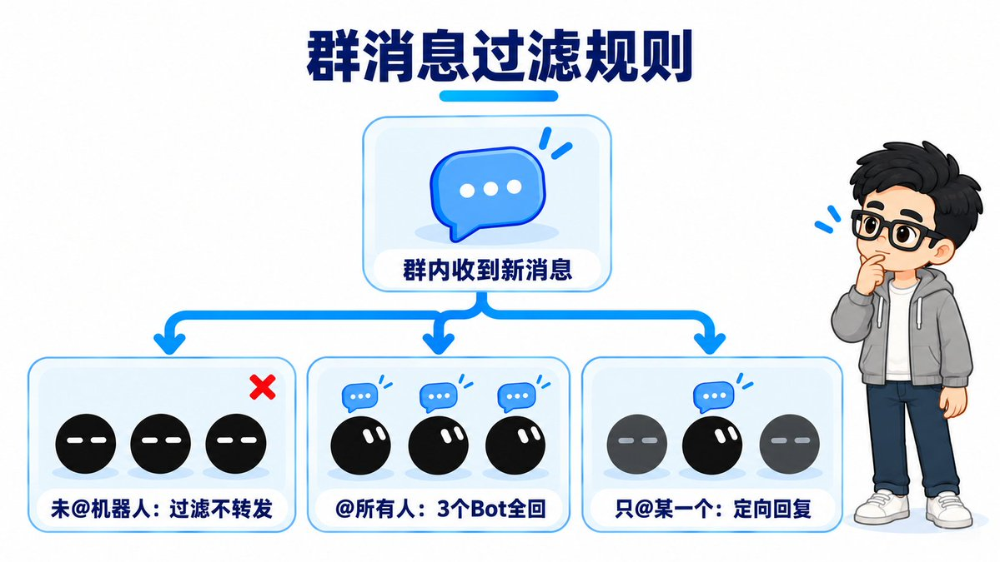
第三个坑，发消息前要先确认。图 10 那次叫虚拟机服务管家发登记表，它没有直接发，而是先回到 Grok Bot 私聊等我点了「发吧」才发。因为一个 Bot 转达的话，另一个 Bot 不会当成我本人的指令。
后来定下规矩：从飞书转进来的我本人的消息当作我亲自说的；确实需要确认的操作，直接在飞书里推一张带「同意」或「驳回」按钮的卡片，不用在飞书和客户端之间来回切。
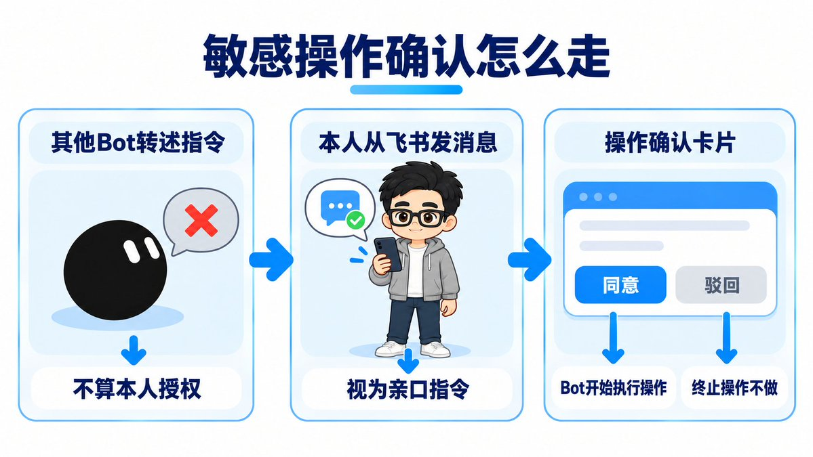
除了这三个，还有几个细节坑大家要注意。回消息要用对 Python 路径：有个 Bot 第一次没发出来回复，查出来用的是系统自带的 python3，里面没有装飞书 SDK。
换成转发程序虚拟环境里的 Python 完整路径就正常了。以后写配置，都要用虚拟环境里的绝对路径。
已经有其他触发器的 Bot 要单独建门铃。记账管家原来就有记账触发器，收到什么都当账记。接飞书必须新起一个专门的「飞书消息」触发器，不然日常闲聊全给记成了账。
连接断了怎么处理。转发程序自带守护循环，退出 5 秒后自动拉起；定时任务 (scheduled task (a job that runs at set times))每 5 分钟巡检一次，假死就重启。我强杀过一次文章主编的转发程序，前后约 9 秒就自己恢复连上，中间不用人动手。
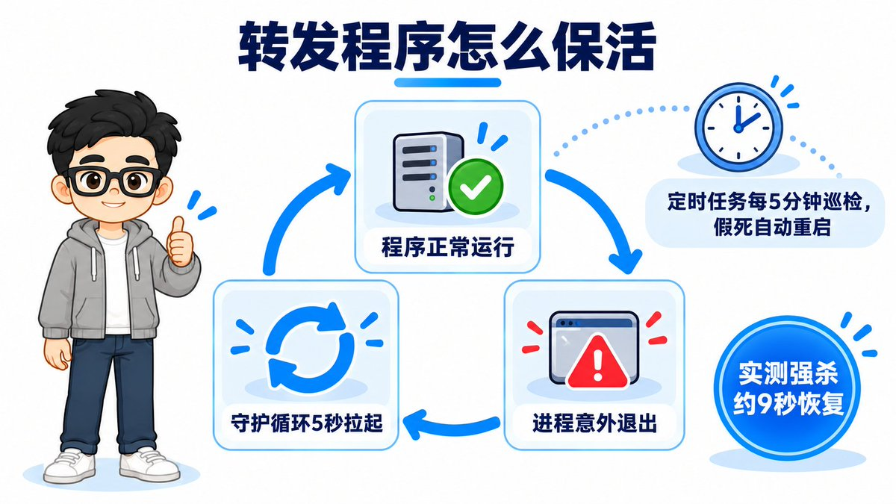
这些坑已经教给飞书应用管家
这些坑都已经教给飞书应用管家了。模板链接：https://x.ai/bot/AJpUlCwa8tyMX7L5UHnuY
它把这些经验全部写进了规则和流程：新权限清单默认 14 项、群里精准识别 @、命令用虚拟环境路径、每个 Bot 独立门铃、需要确认时发卡片。以后建 Bot 会带着这些经验，不会再踩。
我把飞书应用管家做成了模板，去掉了密钥、个人和企业信息以及我的 Bot 名单，保留了整套规则与踩坑经验。
因为虚拟机上的脚本带不进模板，模板里自带了一个从零搭建的技能 (skill (a saved how-to the bot can reuse))，导入后会在你自己的虚拟机上重新搭一遍。
打通机器人通道只是第一步。下一篇我会分享怎么让 Bot 和飞书多维表格协作。大家可以先去导入模板试试。
开源 Grok App 作者（GitHub (a site for storing and sharing code) 1400+ Star），正在驻场给企业落地百万级 AI 项目。
持续更新 Grok Bot 实操教程和可复制的提示词，关注 @cgnot996，我踩过的坑你就不用再踩了。

Source: https://x.com/cgnot996/status/2109247903785198076
← Grok Bot 额度超长续航保姆级新手指南（直接发给 Bot！） Grok Bot 新手指南：从跑通单任务到多Bot分工协作 →